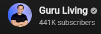

กองทุนรวม
ทำความรู้จักกองทุนรวม
กองทุนรวม คือ การลงทุนรูปแบบหนึ่งที่ได้รวบรวมเงินของนักลงทุนหลายๆคนนำมาลงทุน
ตามนโยบายการลงทุนที่กองทุนรวมกำหนดไว้
โดยมีผู้จัดการกองทุนที่เป็นมืออาชีพช่วยบริหารจัดการเงินของกองทุน
ผู้จัดการกองทุน คือ ผู้ที่ได้รับมอบหมายให้มีอำนาจตัดสินใจลงทุนในหลักทรัพย์ หรือทรัพย์สินอื่น
เพื่อเป็นทรัพย์สินของกองทุนรวมตามนโยบายของกองทุนรวมที่กำหนดไว้
ซึ่งผู้จัดการกองทุนจะต้องได้รับความเห็นชอบจาก
สำนักงานคณะกรรมการกำกับหลักทรัพย์และตลาดหลักทรัพย์ (ก.ล.ต)
ผู้จัดการกองทุนมีหน้าที่บริหารพอร์ตการลงทุนให้มีผลตอบแทนตามนโยบายของกองทุนที่บริหาร
โดยวิเคราะห์ตลาด หลักทรัพย์ และความเสี่ยงคัดเลือกหลักทรัพย์หรือสินทรัพย์ที่จะลงทุน
กระจายการลงทุน รวมถึงติดตามสถานการณ์ตลาดและปรับพอร์ตการลงทุนให้เหมาะสม
ทั้งนี้ กองทุนรวมมีหลายประเภท และมีนโยบายการลงทุนให้เลือกหลากหลาย
เช่น กองทุนตราสารหนี้ กองทุนผสม กองทุนหุ้น กองทุนสินทรัพย์ทางเลือก อย่างกองทุนอสังหาริมทรัพย์ ทองคำ หรือน้ำมัน
โดยแต่ละกองทุนมีความเสี่ยงและผลตอบแทนแตกต่างกันตามประเภทสินทรัพย์ที่กองทุนไปลงทุน
ความเข้าใจผิดเกี่ยวกับกองทุนรวม
นักลงทุนมือใหม่ยังมีความเข้าใจผิดเกี่ยวกับกองทุนรวม โดยเรื่องที่มักเข้าใจผิดมีอยู่ 3 เรื่องหลักๆ ได้แก่
1.ราคาหน่วยลงทุนต่ำๆ แปลว่าถูก น่าซื้อเสมอบางคนเวลาซื้อของมักจะดูที่ราคาเป็นเหตุผลหลักประกอบการตัดสินใจ
พอเห็นราคาต่ำๆ จึงคิดว่าถูก น่าซื้อเสมอ เช่น กองทุน A ราคาหน่วยลงทุนอยู่ที่ 8 บาท
เลยบอกว่าถูกกว่ากองทุน B ที่ราคาหน่วยลงทุนอยู่ที่ 15 บาท ถ้าซื้อกองทุน A
แล้วจะได้จำนวนหน่วยลงทุนมากกว่ากองทุน B จึงมองว่าน่าซื้อ น่าลงทุนมากกว่า
แต่แท้จริงแล้วการซื้อกองทุน ราคาหน่วยลงทุนที่เห็นไม่ได้บอกว่ากองทุนนี้ถูกหรือแพง ราคาหน่วยลงทุนต่ำๆ
จึงไม่ได้แปลว่าถูก หรือน่าซื้อเสมอไป เนื่องจากสาเหตุที่ราคาหน่วยลงทุนของแต่ละกองทุนแตกต่างกันนั้นมีหลายปัจจัยเข้ามาเกี่ยวข้อง
ทั้งเรื่องช่วงเวลาจัดตั้งกองทุนซึ่งกองทุนที่เสนอขายครั้งแรกมักตั้งราคาไว้ที่ 10 บาทต่อหน่วย
นโยบายการจ่ายเงินปันผลซึ่งกองทุนที่มีนโยบายจ่ายเงินปันผล หลังการจ่ายปันผลจะทำให้มูลค่าหน่วยลงทุนปรับตัวลดลง
การเลือกหลักทรัพย์และการซื้อขายหลักทรัพย์ของกองทุนซึ่งเมื่อราคาหลักทรัพย์เปลี่ยนแปลงไปจะส่งผลต่อมูลค่าหน่วยลงทุน
ดังนั้น ราคาหน่วยลงทุนต่ำๆ ไม่ได้แปลว่าถูก น่าซื้อเสมอไป และราคาหน่วยลงทุนสูงๆ ก็ไม่ได้หมายความว่าแพง ไม่น่าซื้อแล้ว
ควรพิจารณาเหตุผลอื่นๆ ประกอบการตัดสินใจเลือกกองทุน
2.กองทุนเสี่ยงต่ำไม่มีโอกาสที่ผลตอบแทนจะติดลบแม้กองทุนที่เราเลือกลงทุนจะมีความเสี่ยงต่ำ มีความผันผวนน้อย
เช่น กองทุนตราสารหนี้ โอกาสที่ผลตอบแทนจะติดลบมีน้อยมาก แต่ก็มีโอกาสเกิดขึ้นได้เช่นกัน
เช่น ในช่วงที่อัตราดอกเบี้ยในตลาดปรับตัวขึ้นอย่างรวดเร็ว ตราสารหนี้ที่ออกใหม่ให้ผลตอบแทนสูงกว่า
ตราสารหนี้เดิมที่ผู้ลงทุนถืออยู่มีความน่าสนใจลดลง ราคาตราสารหนี้จึงปรับตัวลดลง ทำให้มูลค่าหน่วยลงทุนลดลงและมีโอกาสขาดทุนได้
แต่เมื่อเวลาผ่านไป มูลค่าหน่วยลงทุนก็ปรับตัวเพิ่มขึ้นและกลับมากำไรได้เหมือนเดิม
ซึ่งการลงทุนในกองทุนรวมไม่ใช่การฝากเงินจึงไม่ได้การันตีผลตอบแทนหรือรับประกันเงินต้น
ดังนั้น กองทุนที่มีความเสี่ยงต่ำจึงมีโอกาสติดลบหรือขาดทุนได้เมื่อสถานการณ์ตลาดเปลี่ยนแปลงไป แม้โอกาสจะเกิดขึ้นน้อยมากก็ตาม
3.ผลตอบแทนย้อนหลังของกองทุนสามารถใช้อ้างอิงผลตอบแทนในอนาคตได้ปฏิเสธไม่ได้ว่าก่อนตัดสินใจเลือกกองทุน
หลายคนมักจะดูที่ผลตอบแทนย้อนหลังเพื่อเช็กว่ากองทุนนั้นๆ ทำผลตอบแทนได้ดีหรือไม่ แล้วคิดว่าผลตอบแทนในอนาคตจะเหมือนหรือใกล้เคียงกับผลตอบแทนในอดีตที่ผ่านมา
ซึ่งเป็นความเข้าใจที่ผิดเพราะผลตอบแทนในอดีตสะท้อนสิ่งที่เกิดขึ้นไปแล้วภายใต้สภาพตลาดในอดีตที่แตกต่างจากสภาพตลาดในปัจจุบันและอนาคต
ดังนั้น ต้องไม่ลืมว่าผลตอบแทนในอดีตของกองทุนรวมไม่ได้ยืนยันว่าผลตอบแทนในอนาคตจะเป็นเช่นนั้น
ผู้ลงทุนควรวิเคราะห์แนวโน้มที่จะเกิดขึ้นต่อไปว่าราคาสินทรัพย์ที่กองทุนไปลงทุนนั้นมีแนวโน้มเติบโต ทำให้กองทุนมีผลตอบแทนที่ดีหรือไม่
ทั้งนี้ ปัจจัยสำคัญที่ควรพิจารณาในการลงทุนกองทุนรวม
ได้แก่ ความเสี่ยงที่รับได้ จุดประสงค์ในการลงทุน ระยะเวลาการลงทุน นโยบายการลงทุน เงื่อนไขการลงทุน ความสามารถของผู้จัดการกองทุน รวมถึงการเติบโตของมูลค่าหน่วยลงทุน
ขอบคุณข้อมูลจาก kasikornbank.com
กองทุนรวมคืออะไร ?
ขอบคุณข้อมูลจากช่อง
3 เรื่องแนะนำเกี่ยวกับการเงินการลงทุน

บิตคอยน์
สิ่งที่หลายคนยังไม่รู้เกี่ยวกับบิตคอยน์
บิตคอยน์ เกิดขึ้นมาได้อย่างไร?

ทองคำ
สิ่งที่คุณควรรู้ก่อนซื้อทองคำ
ทำไมทองคำถึงมีมูลค่ามากขึ้นเรื่อยๆ?

คำนวนดอกเบี้ย
คำนวนดอกเบี้ยเป็นดียังไง
ทำไมเราต้องรู้เรื่องนี้?
เคล็ดลับเพื่อความมั่นคงทางการเงิน
ควรวางแผนการใช้จ่ายให้เหมาะสมกับรายรับ โดยพิจารณาว่าค่าใช้จ่ายที่จำเป็นมีอะไรบ้าง แล้วกันรายรับส่วนหนึ่งไว้สำหรับเป็นเงินออมและค่าใช้จ่ายที่จำเป็นก่อน
หากพบว่ารายรับไม่เพียงพอก็ควรหาทางลดรายจ่ายหรือเพิ่มรายได้
ควรเตรียมรับมือกับความไม่แน่นอน
มีเงินออมเผื่อฉุกเฉิน 3 - 6 เท่าของรายจ่ายจำเป็นและภาระผ่อนหนี้ต่อเดือน
ตรวจสอบสวัสดิการและประกันสุขภาพที่มีอยู่ว่าครอบคลุมแค่ไหน หากไม่เพียงพอ การทำประกันสุขภาพเพิ่มเติมก็อาจเป็นอีกทางเลือกหนึ่ง
พิจารณาเรื่องความไม่แน่นอนของรายได้ในอนาคต ก่อนตัดสินใจกู้ยืมเงินทุกครั้ง
อาจหาแหล่งรายได้เสริมหรือนำสินทรัพย์ที่มีไปลงทุนให้งอกเงยขึ้น